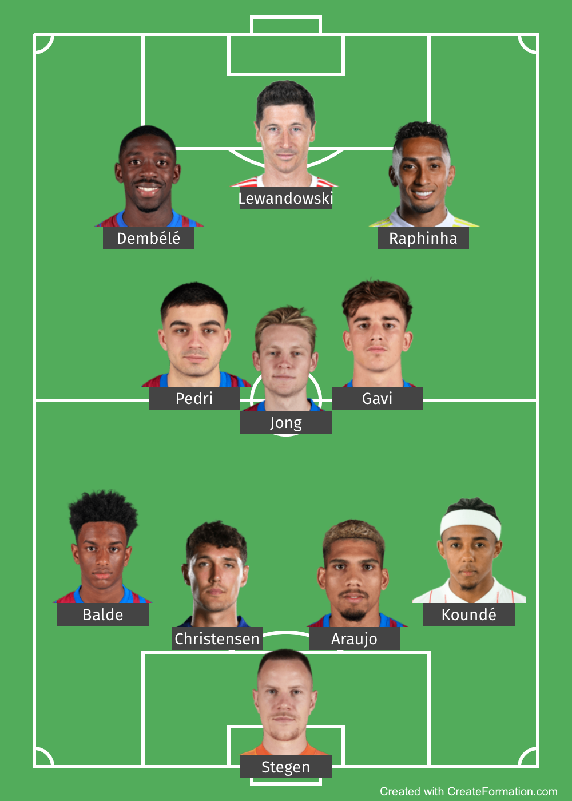

Club Opstelling
De selectie van Barcelona is heel groot en veel diepte in elke positie. Bij elkaar hebben de spelers een marktwaarde van 800 miljoen (December 2022).
Op het moment is de basis opstelling van FC Barcelona:

Ook de Academie van FC Barcelona is heel goed, deze heet La Masia, ook veel van hun spelers van nu komen daar uit. La Masía is de jeugdacademie van FC Barcelona, dat vaak wordt gezien als een van de beste academies ter wereld. In de Spaanse volksmond is het vaak Cantera.
Er komen veel bekende spelers uit La Masia, dit zijn de bekendste: